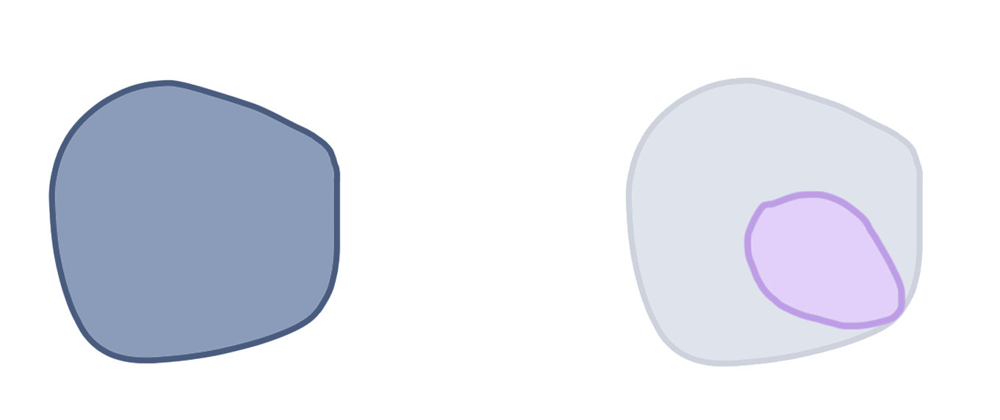
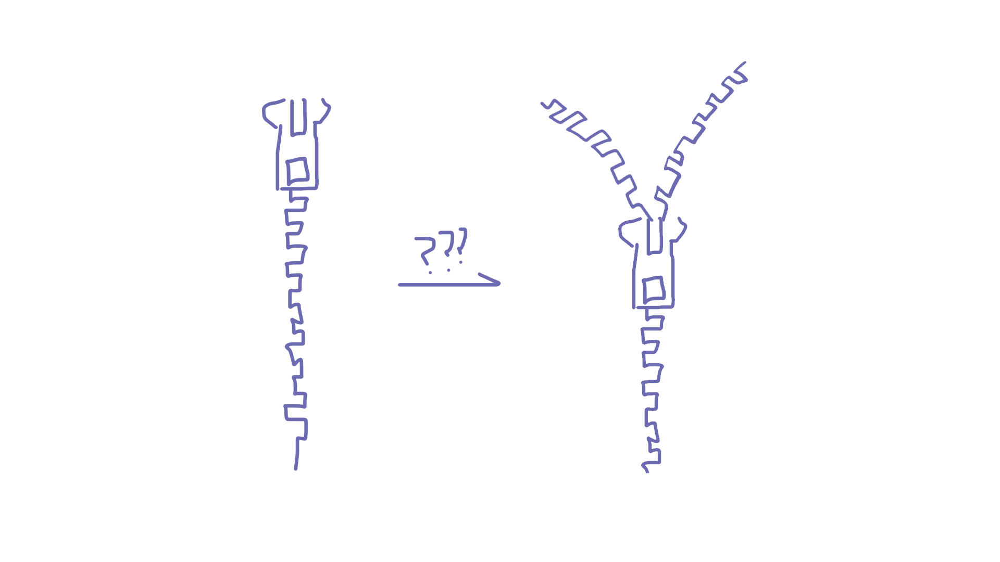

Humans rarely think for themselves. Rather, we think in groups. Just as it takes a tribe to raise a child, it also takes a tribe to invent a tool, solve a conflict, or cure a disease. No individual knows everything it takes to build a cathedral, an atom bomb, or an aircraft.
It is no secret that the key to the rise of Homo Sapiens and the anthropocene wasn’t due to the rationality of any individual human, but rather our collective unparalleled ability to think and share knowledge in large groups. This concept has arisen in the form of specialization of labour.
As a society, we consistently rely on the knowledge of others to live our own comfortable lives. I may not know how to grow my very own russet potatoes, but a farmer in Alberta might. Similarly, a plumber in Massachusetts may not know how to build their own website, but I might. Through being able to supplement each other’s knowledge of the world, our collective intelligence is much greater.
Left: Collective knowledge of the group. Right: My subset of knowledge
I like to think about collective knowledge as a big blob. Each individual contributes a unique subset of knowledge. We get the entirety of human knowledge by taking the union of the knowledge of all the individuals in the group. Of course, as these groups of individuals grow ever larger due to globalization, each individual may choose to specialize in a narrower subset of knowledge as generations go on to reduce redundancy. Why know how to build your own car when you can buy it yourself? The adoption of globally accepted currencies has made this easier than ever.
Knowledge illusion
Humans also have this ‘knowledge illusion’ where we think we know a lot, even though individually we know very little. We treat the knowledge of the human collective as if it were our own, even subconsciously.
A crude illustration of a jacket zipper
An example Harari used was the sweater zipper. If I were to ask you if you knew how a zipper works, the vast majority of you would exclaim “yes, of course!” Yet, if asked to describe in detail every single step, most would fail to do so. Even with something that seems so basic and intuitive seems to elude an explicit explanation. We have begun to stand on the shoulders of giants yet refuse to acknowledge their presence.
Although we may have increased the overall area of our collective knowledge, the surface area of each individual has also shrunken, turning from balanced and broad to narrow and unwieldy.
Rebalancing our blob of knowledge
Another interesting property about the knowledge blobs of individuals is that they are magnetic. I mean this in the sense that individuals that have one blob of knowledge tend to attract and be attracted to individuals with similar orientations and shapes in their blobs of knowledge, much like how magnetic dipoles align in a magnet. As humans, we tend to want to minimize our cognitive dissonance and surrounding ourselves with like-minded individuals is the easiest way to do that.
Individuals in these clusters experience a sort of echo chamber effect whereby the magnitude of their knowledge is amplified through the mutual alignment of their knowledge. However, this also poses a unique challenge where movement only happens in one direction and there is little to no room to deviate from that direction and try something new; something incredibly dangerous for innovation. This, in a sense, is turning collaborative thinking into groupthink.
People afraid of losing their truth tend to be more violent than people who are used to looking at the world from several different viewpoints.
Blue: Previous ‘specialized’ knowledge. Purple: broad foundational knowledge
What we can do to counteract this extreme alignment is to build a broader foundation of knowledge. When you come across an individual with differing views, hopefully you will at least have the base fundamental knowledge to understand their perspective.
Learning communities
This, at least in part, is why I’ve recently become more certain of wanting to go to academia in the future. I used to have tunnel-vision in thinking that all I wanted to do in the future was to just work in industry CS. Recently, I’ve started to realize that CS not a single discipline, but rather it’s a tool that can help solve uniquely human problems, and these human problems are inherently multidisciplinary.
I’ve started to read and learn more about the world around me outside of my little bubble of CS-related topics and it’s been eye-opening to see issues I read about in my philosophy class come up in a linguistics lecture which in turn comes up in a book I’m reading. I’ve found that the best way for me to cement my learning and understanding is through discussion with people, rather than just sitting and ruminating on my own — a very different pace than the typical code-Stackoverflow-copy-repeat self-learning cycle that most programmers (including myself) are familiar with.
The important part of learning communities like colleges is not necessarily the alignment in what you’re studying, but rather in the shared mindset of discussion, learning, and understanding. To broaden my foundation of knowledge is to read more about the opinions and findings of others and to critically discuss these among peers who may have different views. If we want our specialized knowledge to be applicable in a wide range of situations, we need a broad foundational base that can support that.
Wiggle room
If you want to go deeply into any subject, you need a lot of time, and in particular, you need the privilege of wasting time. You need to experiment with unproductive paths, explore dead ends, make space for doubts and boredom, and allow little seeds of insight to slowly grow and blossom
For me, learning is very close to a zero sum game with my time. I can only expand the area of my knowledge blob so fast. If I want to broaden my foundational knowledge base, I need to reign in the amount of time spent growing purely technical strengths and to stop saying ‘yes’ to any and every opportunity that comes up.
Slowly but surely, I’m learning to value my own time and to set it aside to just absorb more about the world and to extend the reaches of my knowledge just a little bit further. To dilly-dally among the Wikipedia rabbit holes, cultivate my digital garden, and faff among the ridiculously long list of side projects I planned to start. I’m experimenting with what I previously thought were deadends and little seeds of insight are starting to grow. Maybe I’ll find something interesting to share among the construction of this broader foundation.
Acknowledgements
A big thank you to Anson for always being a sounding board for fresh dough (half-baked ideas would be too generous of a description for these). Thanks to Anne and Joice for also giving feedback on rough drafts :))